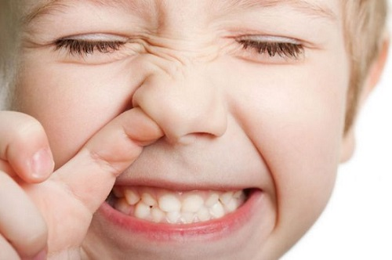

Дети, как правило, суют в свои маленькие ноздри не только кончики своих пальцев. Они также любят совать в нос части игрушек (например, бусинки) и пищу (например, изюм). Признаками того, что затруднение носового дыхания у ребенка вызвано инородным телом в носу, являются:
• действительно сильный неприятный запах из носа ребенка;
• густое зеленое отделяемое только из одной — забитой — ноздри;
• других проблем у ребенка нет, как и признаков простуды.
ЧТО ДЕЛАТЬ
Хотя вы можете аккуратно применять следующие домашние средства, лучше обратиться к врачу, чтобы он удалил инородное тело. Ваш врач может использовать специальные щипцы, пинцет или крючок для удаления особенно больших застрявших предметов. Если вы будете слишком усердствовать в удалении предмета, ребенок может вдохнуть его в легкие. Если вы даже решите обратиться к врачу для удаления инородного тела, чтобы помочь ему в этом, попробуйте сделать следующее:
• аккуратные промывания носа и паровые ингаляции.
После того как вы или ваш врач удалили предмет, обязательно объясните ребенку, что этого больше нельзя делать. Нарисуйте устройство носа и покажите, почему ковыряние в носу или запихивание в нос посторонних предметов может причинить вред. Также будет мудро продолжать промывания носа и паровые ингаляции пару раз в день в течение нескольких дней после того, как инородное тело удалено. |
Иногда это может размягчить густые выделения до такой степени, что пойманный в ловушку виновник легко выйдет во время чихания;
• после промывания носа и паровых ингаляций аккуратно попробуйте высосать оставшуюся преграду и, если удастся, застрявший объект носовым аспиратором. Не используйте тонкий аспиратор с резиновым наконечником, который нужно вводить в нос. Это может еще глубже протолкнуть застрявший предмет. Возьмите аспиратор с широким пластиковым наконечником, который герметично охватывает ноздрю снаружи;
• прижмите свободную ноздрю, чтобы закрыть ее. Затем заставьте ребенка сильно чихнуть или дунуть через нос. Зачастую инородное тело может быть вытолкнуто.
Здоровье ребенка от докторов Сирс / Сирс У. и др.